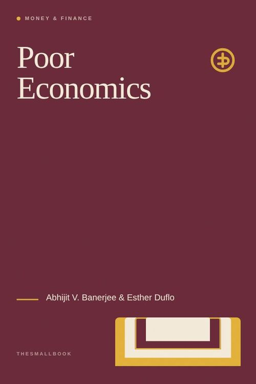

Why Did Minamata Disease: The Cat That Danced and the Company That Waited Fail?
The Cat Danced, Then the Town Understood
What happened
From 1932 the Chisso chemical factory in Minamata, Japan, discharged wastewater containing methylmercury, a byproduct of acetaldehyde production, into Minamata Bay. The mercury concentrated up the food chain into the fish and shellfish that were the fishing town's diet and livelihood. By the early 1950s cats were convulsing and falling into the sea, crows dropped from the sky, and fishing families began developing numbness, constricted vision, slurred speech and convulsions. The disease was officially recognised in May 1956. Chisso's own doctor proved the cause by 1959, feeding factory effluent to a cat that developed the disease; the company suppressed the result, negotiated token payments with victims that waived future claims, and continued discharging, even rerouting waste to a river mouth that spread the poisoning to new villages. The state protected the company town's economics for over a decade; the government formally acknowledged the cause only in 1968, the year production ended. Thousands were certified as patients after gruelling fights; thousands more were refused. Compensation litigation ran for half a century, and Minamata became the world word for industrial poisoning, lending its name to the 2013 global mercury treaty.
The fatal mistake
Chisso committed the full sequence this graveyard exists to document: cause the harm, prove it internally, bury the proof, buy silence cheaply with sympathy payments structured as waivers, and keep polluting while negotiating. The town's dependence on the factory as employer was wielded as a shield, splitting victims from neighbours. The national government, prioritising industrial growth, delayed acknowledgment for nine years after the internal proof existed. Certification then became a second gatekeeping, recognising a fraction of the poisoned and forcing the rest into decades of litigation. Every institution optimised for the polluter's continuity and called the optimisation realism.
The lesson
Internal proof suppressed is the moment negligence becomes something worse; companies should treat their own scientists' unwelcome results as the fire alarm, not the fire. Sympathy money with waivers is not compassion, it is evidence management, and courts and history eventually price it as such. A town that cannot afford to close its poisoner has already paid; the only question is the currency, and mercury collects in children. And the state's delay compounded every private failure: when government finally spoke in 1968 it confirmed what the cats had announced in 1953. Believe the cats early.
The antidote book

Nobel-winning economists Banerjee and Duflo show that poverty is a set of solvable everyday problems - and that small, tested interventions beat grand ideologies.
READ THE SUMMARY OPEN INTERACTIVE BOOKQuestions people ask about Minamata Disease: The Cat That Danced and the Company That Waited
Why did Minamata Disease: The Cat That Danced and the Company That Waited fail? Chisso committed the full sequence this graveyard exists to document: cause the harm, prove it internally, bury the proof, buy silence cheaply with sympathy payments structured as waivers, and keep polluting while negotiating. The town's dependence on the factory as employer was wielded as a shield, splitting victims from neighbours. The national government, prioritising industrial growth, delayed acknowledgment for nine years after the internal proof existed. Certification then became a second gatekeeping, recognising a fraction of the poisoned and forcing the rest into decades of litigation. Every institution optimised for the polluter's continuity and called the optimisation realism.
How much was lost? A town poisoned by its own factory for 36 years
What is the lesson? Internal proof suppressed is the moment negligence becomes something worse; companies should treat their own scientists' unwelcome results as the fire alarm, not the fire. Sympathy money with waivers is not compassion, it is evidence management, and courts and history eventually price it as such. A town that cannot afford to close its poisoner has already paid; the only question is the currency, and mercury collects in children. And the state's delay compounded every private failure: when government finally spoke in 1968 it confirmed what the cats had announced in 1953. Believe the cats early.
Minamata Disease: The Cat That Danced and the Company That Waited kyun fail hua? In simple English: Chisso committed the full sequence this graveyard exists to document: cause the harm, prove it internally, bury the proof, buy silence cheaply with sympathy payments structured as waivers, and keep polluting while negotiating. The town's dependence on the... The cost was A town poisoned by its own factory for 36 years.
Keep digging
More trust and safety failures · Open the full Graveyard
Read the antidote book summary: Poor Economics
Related failures
- Why did The City of Troy fail? ~1180 BC · The Original Free Gift
- Why did Juul fail? 2022 · The $38B Vaping Empire That Vaporized to Zero
- Why did Jet Airways fail? 2019 · The Founder Who Couldn't Let Go
- Why did Cambridge Analytica fail? 2018 · Harvested 87 Million Friends of Friends
- Why did Grenfell Tower and the Cladding Economy fail? 2017 · The Tower Everyone Was Warned About
- Why did Wells Fargo fail? 2016 · 3.5 Million Fake Accounts, Opened by Its Own Staff
They paid full price. You get the lesson in simple English.